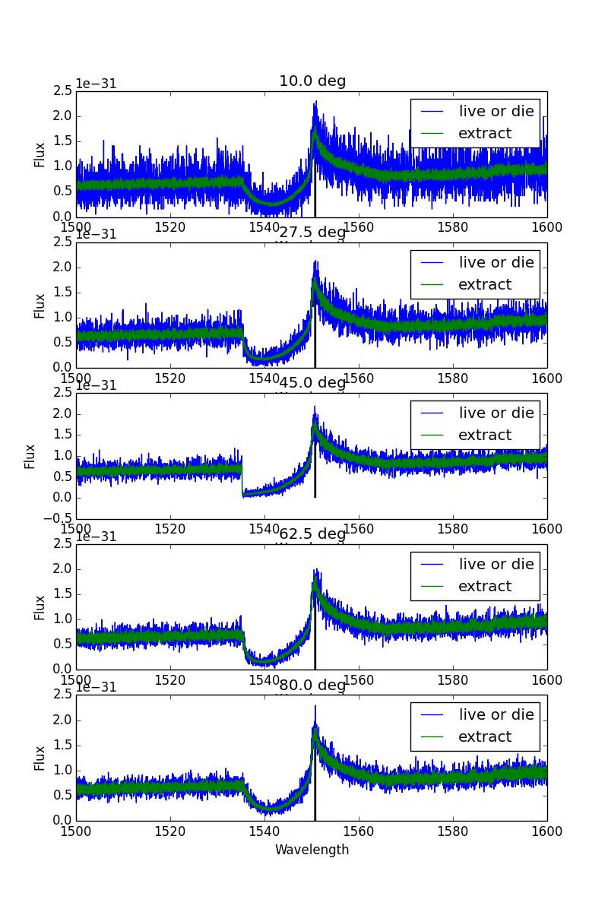

Loading…
Line profiles change with viewing angle for a spherical wind model in spherical coordinates #118
The content you are editing has changed. Reload the page and try again.
I am fairly sure thatt he root cause of this problem is that velocities in xyz coordinates are not being calculated correctly for a spherical wind, as photons pass through it. The lines in vwind_xyz that convert the velocity vector contained in w to the local velocity are almost certainly wrong in the spherical case. Among other problems, the code seems to imply that the velocity could never be directed inward.
Note that this is consistent with the fact that neither spherical polar nor cylindrical coordinates exhibit a problem.
Note that in spherical_make_grid, the coordinates of the cells are set up in the x,z plane at 45 degrees. This may account for in part why things work there as well. (The rationale for using 45 degrees was that this was most likely to be contained in a biconical wind, but that may have been a silly choice nonetheless.
The content you are editing has changed. Reload the page and try again.
There are several things I do not understand about the vwind_xyz routine. It also looks as if in cylindrical coordinates that the v velocity is not reversed if the coordinate position is below the disk plane.
Note that there are some general routines in vector.c that are intended to project from one frame to another. These seem to be mainly used by py_wind however. It's not clear they are the generalized routines we want.
The content you are editing has changed. Reload the page and try again.
Knox, there's a line in all coordinate systems except spherical which does this
else if (p->x[2] < 0) // For 2d coord systems, velocity is reversed if the photon is in the lower hemisphere.
vv[2] *= -1;so I that should take care of velocities in the lower hemisphere.
What the wind_xyz routine is doing in spherical coodinates is not entirely clear to me yet, but I'm looking into it.
The content you are editing has changed. Reload the page and try again.
James will check that changing the angle at which the velocities etc are calculated from 45 degrees to something else does or does not move the angle at which the spectra are correct. If that is not the case, then it is fairly unclear what the problem is specifically.
The content you are editing has changed. Reload the page and try again.
Increasing the number of cells a spherical model using spherical coordinates does not change the the spectrum that is produced. The figure below shows the model we have been testing but with 500 cells in the radial grid.
The content you are editing has changed. Reload the page and try again.
The main problem is mostly associated with the blue wing, which looks like a pure absorption effect. This seems confirmed by this test, where I show spectra calculated for 0 and 1 scatters specifically. This really does argue that somehow we are calculating the line absorption incorrectly. It is also interesting that everything seems symmetric about 45 degrees.
The content you are editing has changed. Reload the page and try again.
I've been trying to figure this out today and have made some progress. I'd already checked that the optical depths photons experience in different directions appear to be wrong. I then tried checking the velocities along each line of sight- these appear to be correct. I did this by forcing photons to go along the viewing angles of the spectra.
I then tried editing the code in dvwind_ds. Currently the code seems to interpolate on a three-vector which stores dvds in each co-ordinate direction.
Modifying the dvwind_ds routine to the following code
ds = 1.0;
vwind_xyz(&pp, v1);
stuff_phot(&pp, &pnew);
move_phot(&pnew, ds);
vwind_xyz(&pnew, v2);
vsub (v2, v1, diff);
dvds = length (diff);
return dvds;i.e. simply calculating the velocity at ds=1.0 along the direction of the photon produces what appear to be the correct results:
So something is going wrong in the dvds routine. This could either be in the original calculation of the v_grad stored in the wind pointer, the interpolation, or perhaps in the projection into different coordinates. There's definitely a question about whether the routine works in other cooadrdinates other than cylindrical.
The content you are editing has changed. Reload the page and try again.
The content you are editing has changed. Reload the page and try again.
What it was doing before:
- v_grad was calculated upon setting up the wind in each cell. v_grad here is the velocity gradient tensor at the inner vertex of the cell, and is a 3x3 matrix with the components being (I think)
dv_x/dx dv_x/dy dv_x/dz
dv_y/dx dv_y/dy dv_y/dz
dv_z/dx dv_z/dy dv_z/dz
This is done by the routine model_vgrad(), which does much the same as my little piece of code above.
- In dvwind_ds, we then use our normal interpolation procedures for calculating the velocity gradient tensor, using coord_fraction to weights by which we calculate
n = coord_fraction (0, pp.x, nnn, frac, &nelem);
for (j = 0; j < 3; j++)
{
for (k = 0; k < 3; k++)
{
x = 0;
for (nn = 0; nn < nelem; nn++)
x += wmain[nnn[nn]].v_grad[j][k] * frac[nn];
v_grad[j][k] = x;
}
}- there is then this section of code:
// ??? Not clear this is coorrect !!! for multiple coordinate systems
/* v_grad is in cylindrical cordinates, or more precisely intended
to be azimuthally symmetric. One could either
(a) convert v_grad to cartesian coordinates at the position of the
photon or (b)
convert the photon direction to cylindrical coordinates
at the position of the photon. Possibility b is more straightforward
given the existing code */
project_from_xyz_cyl (pp.x, pp.lmn, lmn);
dvds = dot_tensor_vec (v_grad, lmn, dvel_ds);I'm a little confused because the comments in model_vgrad() tend to imply it's calculated in cartesian coordinates- so the thing I'm trying to get to the bottom of now is what coordinate systems the routines expect and whether this is done correctly.
Re Spherical polar- yes, I checked this, and the results are fine in spherical polar coordinates.
The content you are editing has changed. Reload the page and try again.
The content you are editing has changed. Reload the page and try again.
hmm, OK. I'm not sure I completely understand, but perhaps we can discuss next time we have a telecon.
I've profiled the proposed change. There is a slight increase in the time spent in the routine but the overall time spent in dvwind_ds is on the order of 0.1 second over a spectral cycle and is a fraction of the calculate_ds routine, so it doesn't matter.
I can therefore implement this- the only thing to be slightly careful of is how to set ds so as to avoid numerical problems but provide the right accuracy. It appears 1e7 was set as the minimum in the calculation of v_grad. I'll try and do some relevant tests and put in error conditions and sanity checks.
I presume we want this method to be used in all coordinate systems? In which case we could probably remove v_grad from the wind structure.
The content you are editing has changed. Reload the page and try again.
The content you are editing has changed. Reload the page and try again.
Yes sorry, I forgot to mention that. This particular tensor (i.e. v_grad) only appears to be actually used in this function, and it is just set up by some other routines.
The content you are editing has changed. Reload the page and try again.
The content you are editing has changed. Reload the page and try again.
I will do- however, I've realised that my proposed solution above is, in general, incorrect. The reason being that what I should be doing is evaluating the differential along the LoS of the photon (unit vector n) of the velocity projected along the same vector, i.e. dv_n/dn
This is not what I did above- I instead had calculated just dv/dn. The answer was the same because we are talking about absorption in a spherically symmetric wind and thus in this case the unit vectors were always radial and the velocity field is also radial.
The solution is then something like:
ds = 1.0;
vwind_xyz(&pp, v1);
stuff_phot(&pp, &pnew);
move_phot(&pnew, ds);
vwind_xyz(&pnew, v2);
dvds = fabs(dot(v1, pp.lmn) - dot(v2, pp.lmn));
return dvds;This is about the same timewise and produces the correct answer for this model. I will check explicitly that the models all look correct as with the old method for non spherical coordinate systems before implementing this change.
The content you are editing has changed. Reload the page and try again.
I haven't merged this change yet as there are some small differences in the spectra before/after that I want to understand. It's something that could potentially affect all our models to some extent so we should be careful that it works as expected.
The content you are editing has changed. Reload the page and try again.
Changing this method has next to no effect on the CV models, and simply fixes the spherical model to the correct behaviour.
In the AGN model, there are some changes along the absorption sightlines (here's the 75 and 80 deg sightline plotted with three methods- old, and new with two different values of ds)
In the old method, the velocity gradient tensor is calculated using a ds of 1e7cm, and interpolate on in the cycles.
In the new method, we calculate on the fly. While we are still sensitive to any non-linear behaviour of the velocity gradient along the sightline in question over the small distance ds, we are presumably doing better for directions which are well off an axis of the tensor, because you could have non-linear direction variations - meaning that a linear interpolation is not great. So, it's possible that this method is more accurate.
Any thoughts @kslong @lazygun37 @Higginbottom ? I can merge in, or I can try and do more digging by looking at the velocity field itself, say printing out dvds for each calculation and looking at the variation.
The content you are editing has changed. Reload the page and try again.
The content you are editing has changed. Reload the page and try again.
Sorry Knox should have been a little clearer there.
- Changing the method of calculating dvds has no affect on a CV model in cylindrical coordinates (examples/cv_standard.pf)
- It fixes a spherical wind model in spherical (1D) coords to the expected behaviour (see ~/Dropbox/Python/sphere_out_issue117/)
- the effect on the fiducial AGN model in cylindrical coordinates is shown above (examples/fiducial_agn.pf)
So yes, those two AGN spectra plotted above have a disk. The new method does have some effect on other coordinate systems at least in the AGN model, and it's not clear whether it's better or worse. These differences are fairly small but I don't fully understand them.
The content you are editing has changed. Reload the page and try again.
The content you are editing has changed. Reload the page and try again.
Ok, so I wrote a little bit of code which evaluated the relevant velocity gradient at a load of points along the 75 degree sightline. I did this for the old method, and also for the new method with a load of different values for ds when evaluating dvds (see code above).
This is for the fiducial AGN model. I am not sure why the turnover at ~3e16 happens- where rotational gradients start being dominated by poloidal? The acceleration length here is 1e18cm.
The results are interesting. The old method does pretty badly near the base of the wind- presumably because the velocity field is fairly complex there and doing a linear interpolation between cells is not so good.
The new method with 1e3 is clearly struggling when the wind is coasting, because there is no appreciable change in v over a distance as small as 1e3cm.
Note also the level of ..'noise' in the new method at larger distances - I am not quite sure why this is happening but it suggests numerical/precision problems to me.
I am wondering if the best approach will be the new method but with a ds which is chosen according to the scale of the cell you are in- i.e. a fixed fraction of the cells extent or something. I can test this and will do so.
The content you are editing has changed. Reload the page and try again.
The content you are editing has changed. Reload the page and try again.
Ok, so I'm not quite sure exactly why the jagged behaviour occurs, but it's definitely related to the fact that the routine vwind_xyz interpolates on the stored values of v for each cell (see plot below)
If you replace the calls in dvwind_ds to vwind_xyz with sv_velocity (a more complicated routine which finds the streamline and hence the velocity at the point) then the results look like this. This is a comparison of the new method, with ds set to 1e7, with both vwind_xyz and sv_velocity, and also includes the old method for good measure.
So I'm glad I looked into this, because it's definitely not a case of new method good, old method bad. We could just continue to use the old method except in SPHERICAL coords, but then we're messing up the lowest part of the wind quite badly.
One might argue that this only happens over a cell or few, and we model that part of the wind poorly anyway. Conversely, that region is dense and could be important for absorption and emission, so getting the velocity gradient wrong there is perhaps not a very good idea - and the fact that the AGN spectrum appears to be affected a little perhaps suggests it is an important region (although I should check where the absorption occurs in those new features).
I'll look into this more tomorrow- right now I'm not entirely sure what the best course of action is.
The content you are editing has changed. Reload the page and try again.
The content you are editing has changed. Reload the page and try again.
Knox, I don't fully understand your comment.
The problem at large radii - the discrete jumps in the blue line - is in the 'on the fly' method, and only when you calculate dvds on the fly using the vwind_xyz routine, which finds velocity at a point x by doing a bilinear interpolation.
If you use the on the fly method but use the sv_velocity() routine you get the green curve- smoother behaviour at large distances that agrees with the smooth behaviour of the old method i.e. the interpolation on the velocity gradient tensor.
At small distances - within the first 30 cells or so of the disk- all three methods disagree. One might expect that the on-the-fly method with sv_velocity() gives the most accurate result (note this is also the slowest routine) in which case the other methods are off by a fairly large amount here.
So I think the old method of bilinear interpolation is clearly best at large distances in 2d coordinate systems. There are 2 problems to solve:
- the bilinear interpolation method gives the wrong answers in spherical coords.
- Solution: Can either use the on the fly method in spherical coords with an if statement, or do the correct rotation as Knox suggests.
- the bilinear interpolation method gives wrong, or at least different answers close to the disk.
- Solution: I don't know!
The content you are editing has changed. Reload the page and try again.
Knox, this stuff about disagreeing at close distances is just a silly mistake on my part- the code is fine. I'd accidentally started the photon I was tracing off with a direction that mean it spent time outside the wind, and the check I wrote to check it was in the wind was also wrong...so in the region before ~3e16 the photon is travelling in empty space, so no wonder the calculation is completely different and wrong. Sorry about that...
This is what the actual plot should like that spends it's entire time in the wind:
I'm pretty sure the jagged behaviour will be just be what you suspected about derivatives changing when crossing cells but I'm checking that.
So that means we definitely want to keep the bilinear interpolation in general, but obviously this doesn't work in spherical 1d coordinates. I could just switch the method in spherical coords to use the on the fly method, but call model_velocity() instead of the vwind_xyz() routine - this avoids interpolating altogether and should give a smooth curve. I appreciate this approach is lazy because it avoids the problem I am finding hard of understanding how the interpolation method should translate to a 1d method.
I'll clean up all these comments when we decide what to do here.
The content you are editing has changed. Reload the page and try again.
The content you are editing has changed. Reload the page and try again.
This is, I believe, a separate issue to the lack of doppler shift described in #117 so I am creating a new issue. That issue should be consulted for history of the problems.
Running a spherical mode in spherical coordinates (~/Dropbox/Python/sphere_out_issue117/ contains the required files) produces line profiles which change as a function of viewing angle in both extract and live or die mode. The following figure demonstrates this:

In cylindrical coordinates this dependence goes away for an identical model, and the line profile always looks like the middle panel.
I've also checked that this occurs for both 30 and 100 grid cells, so it doesn't appear to be a special gridding artefact.